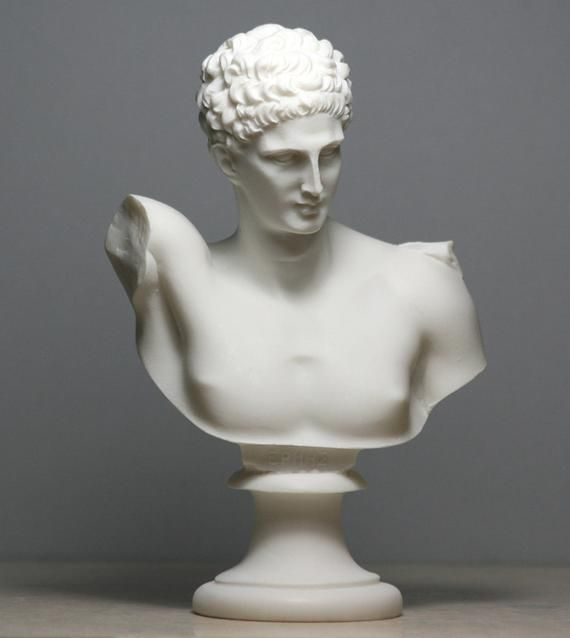

Круглая скульптура - вид скульптуры, которая представляет собой произведение трёхмерного объёма (обозримая со всех сторон). Главные типы круглой скульптуры - бюст, статуя, скульптурная группа. Эта скульптура предназначена, в основном, для кругового осмотра.
Круглая скульптура делится на три вида: монументальную, монументально-декоративную и станковую. Первая призвана выделяться на улицах и в архитектурных ансамблях, характеризуется общественно- значимой тематикой и пафосным исполнением. Вторая наоборот, должна гармонировать с окружающей средой и предназначена для украшения. Станковая скульптура предназначена дл закрытых помещений. Кроме того, круглая скульптура подразделяется по жанрам: статуи (изображения человека в рост), скульптурные группы (объединения фигур), портреты (в том числе выполненные в виде статуй или скульптурных групп - групповые портреты) и анималистические произведения
Круглая скульптура была особенно любима в античной Греции и Риме. В средние века она прекратила свое существование и вернулась к жизни лишь в эпоху Возрождения. Вероятно, многие видели фоторепродукцию с «Давида» Донателло (ок. 13S6-1466): обнаженный юноша с тяжелым мечом попирает ногой отрубленную голову великана. Эта исполненная в 1408-1409 гг. статуя и была «первой ласточкой». С того времени круглая скульптура заново вошла в европейское искусство.
Монументальная скульптура содержит в себе прославление кого-то или призыв к чему-то, для нее характерны героический пафос и общественно значимая тематика, ее место на городских площадях, улицах, в больших архитектурных ансамблях.
Монументально-декоративная скульптура предназначена для украшения зданий, городов, парков (decorare - по латыни «украшать»); естественно вписываясь в окружающую среду, она придает ей нарядность. Станковая скульптура предназначена для закрытых помещений, мы встречаем ее в музеях, на выставках, в общественных интерьерах. Название ее происходит от Слова «станок». Являющийся основным приспособлением для работы скульптора, станок состоит из деревянного треножника, на котором крепится круглая или квадратная вращающаяся подставка. Создавая скульптуру, художник периодически поворачивает ее, чтобы обработать все стороны в наиболее удобном положении и при самом выгодном освещении.
Станковая скульптура воссоздает облик человека, передает его характер, настроение и действия. В ней художник проявляет особое внимание к пропорциям формы, оттенкам движений и чувств, к завершенности обработки материала. Станковую скульптуру обычно рассматривают на близком расстоянии. Стоя перед ней, зритель должен погрузиться в мир чувств, переживаний и характеров персонажей, заглянуть в их мысли, в их души. Поэтому нередко говорят, что станковая скульптура «вступает в диалог» со зрителем.
